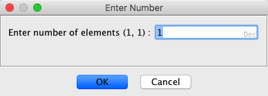

icon at the top of
the editor provides additional editor actions. These are: show the category path of a
component's data type, edit a component's data type, edit the fields of a component, and
apply a cycle group or favorite.
icon at the top of
the editor provides additional editor actions. These are: show the category path of a
component's data type, edit a component's data type, edit the fields of a component, and
apply a cycle group or favorite.The Stack Frame Editor is used to modify a function's stack frame. Each component indicates
either a stack variable or an undefined byte on the stack frame. The variables and undefined
bytes are in ascending order by offset. The following illustrates the editor for a stack
frame.
A Stack Frame Editor can be launched from the right mouse popup on a function or stack variable in the Code Browser.
The Stack Frame Editor is composed of the following:
icon at the top of
the editor provides additional editor actions. These are: show the category path of a
component's data type, edit a component's data type, edit the fields of a component, and
apply a cycle group or favorite.Select the Apply Changes icon in the toolbar to apply
the changes from the editor back to the function's stack frame in the program.
Select the Close dockable component icon  in the
toolbar to exit from the editor. If you have unsaved changes to your stack frame, a dialog will
ask if you want to save the changes.
in the
toolbar to exit from the editor. If you have unsaved changes to your stack frame, a dialog will
ask if you want to save the changes.
To change the local size of the stack frame, edit the Local Size field in the bottom of the editor. If the stack grows negative, changing this value changes the size of the negative side of the stack frame. Otherwise, it affects the positive side. Increasing the size will add undefined bytes to the stack frame. Decreasing the size will shrink the local variable side of the stack by removing bytes from the stack frame. If a local stack variable was defined where bytes are removed, it will also be removed.
To change the parameter offset of the stack frame, edit the Parameter Offset field in the bottom of the editor. Changing the parameter offset will change the overall stack frame size. All parameters' offsets will be shifted so that they are the same relative distance from the parameter offset.
To change the parameter size of the stack frame, edit the Parameter Size field in the bottom of the editor. If the stack grows negative, changing this value changes the size of the positive side of the stack frame. Otherwise, it affects the negative side. Increasing the size will add undefined bytes to the stack frame. Decreasing the size will shrink the parameter side of the stack by removing bytes from the stack frame. If a stack parameter was defined where bytes are removed, it will also be removed.
The edit actions are available both from the icon buttons in the editor and from the popup menu for the component table. To display the popup menu, right mouse click on the component table. There are also short-cut keys associated with each of the edit actions.
 Delete Stack Frame Byte(s)
Delete Stack Frame Byte(s)A contiguous selection of components can be deleted to reduce the local size or parameter size. Only the most negative or most positive bytes can be deleted from the stack frame. This reduces the size of the stack.
To delete components:
- Make a contiguous selection of one or more components (stack variables and undefined bytes) to delete.
- Press the
- The components are removed from the stack frame.
Clearing a component removes the current stack variable defined at that offset in the editor. The editor changes it into undefined byte components that take up the same amount of space as the component being cleared.
To clear stack variables in the stack frame:
- Select one or more stack variable components in the table.
- Press the Clear Component(s) button.
- Each selected component is replaced by undefined bytes. The number of undefined bytes will be equal to the length of the component being cleared.
 Change Stack
Variable's Data Type To Array
Change Stack
Variable's Data Type To ArrayTo create an array data type for a single selected component:

- Specify the number of elements. The maximum size of the array is limited by the number of undefined bytes following the selected component.
- Press the OK button.
- The selected component becomes an array of that same data type with the specified dimensions.
Each row displays information about a byte offset in the stack frame. The Offset, DataType, Name, and Comment fields are editable.
The following summarizes the information about each field for a component.
Offset - The byte offset on the stack frame. This field is editable for defined stack variables.
Length - The length of this stack variable in bytes.
DataType - The data type of this stack variable or undefined if no stack variable defined at this offset. This field is editable.
Name - The name associated with this stack variable. This field is editable.
Comment - A comment associated with this stack variable. This field is editable.
Editing Component Fields
The Offset, DataType, Name and Comment fields are editable. However, the Offset is not editable unless a stack variable is currently defined in the editor for that stack offset.
To place an editable field into edit mode:
- Double click on an editable field.
or
- Select a single component row and press F2 to begin edit mode. This puts the first editable field in that component row into edit mode. Tab will then move to the next editable field.
Applying an Edit
In the editable field, pressing Enter applies the value to the field if it is valid and ends the edit session. If the field's value is invalid, a message is written to the editor's status line and the field remains in edit mode.
Canceling an Edit
In the editable field, pressing Escape cancels the edit session without applying the changes to that field.
Editing More Than One Component Field
You can move directly from editing one component field to editing another by pressing Tab, Shift-Tab, UpArrow or DownArrow. The key press only moves the edit session if the current field edit can be applied. Otherwise, an error is displayed in the status line.
Tab
Pressing Tab applies the current edit and moves to the next editable field in the table. If the current field is the last editable one in this component then it moves to the first editable field in the next component. This key moves the edit session left to right and top to bottom in the table.
Shift-Tab
Pressing Shift-Tab applies the current edit and moves to the previous editable field in the table. If the current field is the first editable one in this component then it moves to the last editable field in the previous component. This key moves the edit session right to left and bottom to top in the table.
Up-Arrow
Pressing the UpArrow key applies the current edit and moves to the same field of the previous component in the table if that field is editable. This key moves the edit session bottom to top in the table.
Down-Arrow
Pressing the DownArrow key applies the current edit and moves to the same field of the next component in the table if that field is editable. This key moves the edit session top to bottom in the table.
Editing the Offset Field
The offset field can be used to move a defined stack variable to a different offset. The variable will only be moved if it fits at the new offset and is allowable. Moving a variable from positive to negative stack space or vice versa is not allowed.
Editing the DataType Field
This can be any data type that is available in the data type manager. To edit the data type double-click the data type cell. This will show the Data Type Selection Dialog, which allows you to easily enter a data type. It can also be Undefined, a pointer to a data type, or an array.
Basic Data Type
This can be a built-in data type (Byte, Word, etc.), a structure, a union, or a typedef.
For example, Word.
Pointer Data Type
This can be the basic Pointer data type or a pointer to a data type. A pointer to a data type is indicated by following the data type with an *.
For example, Word * is a pointer to a Word.
Array
This can be a multidimensional array of any data type.
For example, DWord[2][4] is an array with 2 elements, where each element is an array with 4 elements that are DWords.
Array of Pointers
Arrays of pointers can also be specified.
For example, Float*[5] is an array with five elements where each element is a pointer to a Float.
Pointers to arrays are not allowed. In other words it is not legal for the * to be to the right of the array dimensions.
If the data type can be various sizes, like a Pointer or CString, then the user is prompted for the appropriate size.
Affect of Changing a Component's Size
The new component must be less than or equal to the original component's size plus any Undefined byte components that immediately follow it in the stack frame. Decreasing the component size will create Undefined byte components following it to maintain the stack frame size. Increasing the component size consumes Undefined bytes immediately following the component.
Editing the Name Field
When specified, a stack variable name must be unique in this stack frame. It cannot contain blanks.
Editing the Comment Field
The comment can be any Ascii text.
Pressing the p key invokes the pointer action. This changes the selected component's
data type into a pointer based on its previous type. If an Undefined is selected, it becomes a
simple Pointer. If a Byte is selected, it becomes a Byte*, which is a pointer to a byte. If
MyStructure[5] is selected, it becomes MyStructure[5]*, which is a pointer to an array of five
structures. If the editor is unlocked and the empty last component is selected, a simple
Pointer is added.
If a default pointer size can't be determined, you are prompted for the size of pointer to be
created. A pointer can be 1, 2, 4, or 8 bytes. The maximum size of the pointer is restricted by
the size of the current data type plus the number of Undefined bytes that follow it.
Some data types are part of a cycle group. A cycle group is a collection of data types that are similar and are commonly associated with one another. Cycling a data type facilitates changing a component from one data type to the next data type in the same group. Each cycle group has a short-cut key associated with the group. Pressing the short-cut key cycles from the current data type to the next one in the group. For example, the b key is associated with the Byte cycle group. This group is Byte, Word, DWord, and QWord.
To cycle a component's data type:
- Select the component in the table.
- Press the cycle group key for the desired data type.
- If the component's current data type is not in that cycle group, the first data type in the cycle group that fits will be applied. For example, the b key will add a Byte; the f key will add a Float; the apostrophe key will add an Ascii.
- If the current data type is already in that cycle group, then the next data type in the cycle group that fits will be applied. For example, if the current data type is a Byte, pressing the b key twice would change it to DWord.
If Undefined bytes follow the selected component, the Undefined bytes can be replaced by cycling the data type to a larger sized data type. Likewise, cycling to a smaller data type will add Undefined bytes after the component being cycled.
Cycle groups can also be applied from the component table's popup menu under Cycle.
Data types can be dragged from the Data Type Manager to the component table in the Stack Frame Editor. A regular drag and drop results in the component in the editor being replaced by the one being dragged. The background color of the Structure Frame component (s) changes to light purple as the mouse moves over them. This indicates where the drop is occurring.
Favorite data types are defined from the Data Type Manager dialog. In the Stack Frame Editor, favorites are available through the popup menu in the component table. Applying a favorite data type is similar to dropping a data type. Favorites can be used to replace a component's data type. Favorites can only be applied to a single row selection in the table. Therefore, individual favorites are only enabled when they can be applied (i.e. they fit at the selection and the selection is a single table row).
When a favorite data type is applied to a pointer
component, the component becomes a pointer of that data type instead of simply being replaced
by that data type.
If you right mouse click on a component
where there is no selection, the selection becomes a single component selection containing that
component and the popup menu will appear.
Favorites are discussed further in Creating a Stack Variable, and Replacing a Stack Variable's Data Type.
A stack variable can be created by replacing Undefined bytes with a data type. There must be enough Undefined bytes at the stack offset for the data type to fit.
Drag and Drop
Drag a pointer or fixed length data type to a row in the editor where there is an undefined byte. The row becomes light purple indicating where the data type will get dropped. If the mouse pointer is a 'circle with a slash' then the data type cannot be dropped to replace the component. This happens because the data type being dropped won't fit at that offset in the stack frame or the data type is variable length (for example, "string"). When you drop a datatype it will consume the number of undefined bytes that is equal to its length. If you get a small rectangular box, then the data type can be dropped. Dropping the data type will create a new variable with the dropped data type and a default label at that offset on the stack.
Favorites
Right mouse click on the empty row at the end of the table and pull right to see the Favorites. Select the favorite from the popup and it is added as the last component.
A component can have its data type replaced with a different data type. Undefined bytes are created or consumed as necessary to maintain the overall size of the stack frame.
Drag and Drop
Drag a pointer or fixed length data type to a row in the editor. The row becomes light purple indicating that component will be replaced. If the mouse pointer is a 'circle with a slash' then the data type cannot be dropped to replace the component. This happens because the data type being dropped won't fit at that offset in the stack frame or the data type is variable length (for example, "string"). If you get a small rectangular box, then the data type can be dropped. Dropping the data type will replace the variable's data type that is currently at that offset on the stack. (see Affect of Changing a Component's Size)
Favorites
Single Component Selected
To replace a component's data type with a favorite data type, select it in the table, right mouse click and pick the favorite. Only favorites that will fit in place of the component will be enabled. (see Affect of Changing a Component's Size)
Every component has a data type: Byte, Word, Float, etc.. The category is where that data type is located. Since you can have two data types with the same name in different locations (categories), the editor provides a way to see the category for any component's data type.
To see the category for a stack variable's data type:
A Data Type Editor can be brought up from within the Stack Frame Editor for any component that is an editable data type, such as Structure, Union, or Enum.
To display the editor for a stack variable that has an editable data type:
The Component Table contains numeric fields which display that component's stack offset and length in the Stack Frame Editor. By default stack offsets and lengths are initially shown in hexadecimal. Numbers in the stack information area (such as Frame Size, Return Address Offset, Local Size, Parameter Offset, and Parameter Size) are also shown in hexadecimal by default. There is a tool option, Show Numbers In Hex, that lets you override the default and set whether numbers should be displayed in hexadecimal when an editor is intially displayed.
There is also a toolbar menu item in the Stack Frame Editor that allows you to immediately change whether the numbers are displayed in hexadecimal or decimal. Changing this only affects the current editor where it is changed.
To switch between hexadecimal and decimal display of numeric values in the current editor:
The Structure and Union Editors add options to the tool. To view or edit the option settings:
- From the tool's menu select Edit
Tool Options... which displays the Tool Options Dialog.
- Open the Editors tree node.
- Click on either the Stack Editor tree node to view its options.
The StackEditor tab contains the following options:
Editor Option Functionality
Stack Editor Show Numbers In Hex If selected, all numbers will initially be displayed in hexadecimal when a new Stack Editor is displayed.
Otherwise, the numbers are initially in decimal.
To select an option simply click on the check box.
Provided by: Data Type Manager Plugin